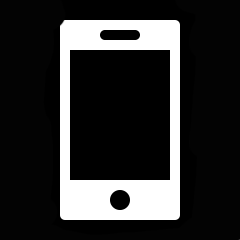

X I am a Front-End Developer with some Back End.
My principal
skills are: HTML, CSS, Bootstrap, Mobile First,JavaScript / jQuery, some WordPress, Git, MySQL, Node /
Express.js, now starting with Vue.js.
The attention to functional and aesthetic details, design concept, making things happen by putting
achievable objectives are issues that I have in mind in my work
I have a great facility to learn, responsibility and work capacity. I am curious by nature and love
challenges, if there
is any technology to learn I can do it.
X
Freelancer (2019)
Front End
DeveloperDevelopment and put in production of Landing Pages.Customization of WordPress
themes
Estudio Laura Gonzalez Abad (2002-2018)
Refurbishment and new construction
of houses and commercial shops.
Subtronic (1989-2000)
Conducting studies using FLEX software to
determine the configuration of floating hose lines for loading and discharge of fuels at sea. Software
installation for meteorological stations.
Management of accounting and administrative tasks.
X laugoabad@gmail.com  +54 9 11 5 122 6486 laugoabad